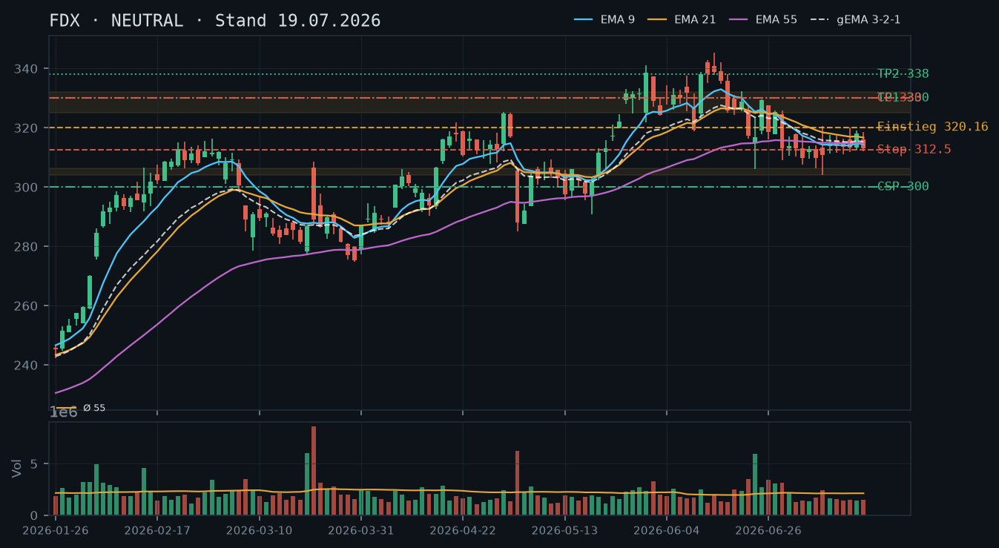
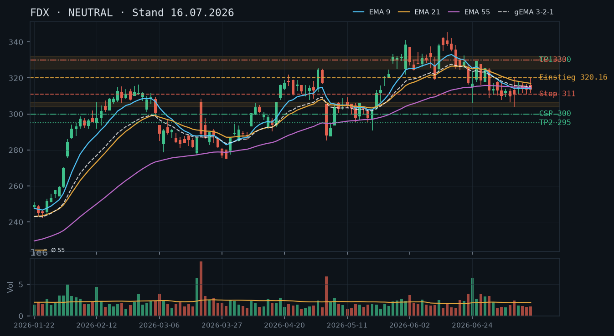
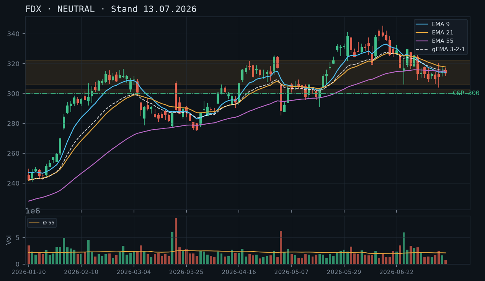
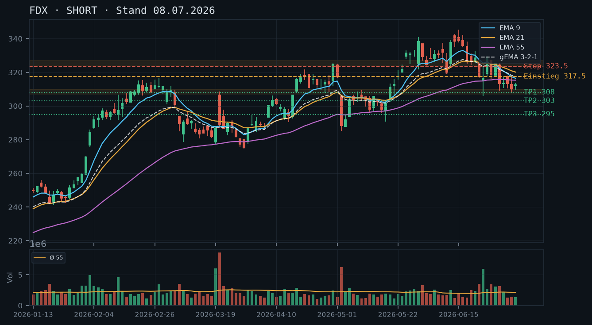

FDX
Analyse-Historie · neueste zuerstFDX bricht am 22.07. mit erhöhtem Volumen über das Rejection-Level 320,16 hinaus auf 321,02 und liefert damit den lang erwarteten technischen Range-Break – der erste valide Long-Trigger seit Monaten.

1 · Trendstruktur
FDX hat nach einer monatelangen Konsolidierungsphase zwischen ca. 304 und 320 am 22.07. erstmals einen bestätigten Tagesschluss über 320,16 (Schluss 321,02) geliefert. Damit ist das Rejection-Level vom 15.07. (Hoch 320,16, Schluss 313,42) gebrochen. Die Tiefstruktur ist klar: dreifach bestätigter Support bei 304,06–306,36 (24.06., 08.07., 09.07.) bildet das Fundament. Das Zwischentief vom 20.07. bei 305,70 hat diese Zone erneut gehalten – vierfacher Test, kein Close darunter. Übergeordnet verläuft seit dem April-Tief (275,20 am 30.03.) eine intakte Aufwärtsstruktur mit steigenden Tiefs.
2 · Candlestick-Formationen
Die Kerze vom 22.07. ist eine bullische Marubozu-ähnliche Aufwärtskerze (Open 313,58, High 322,13, Low 313,50, Close 321,02) mit einem langen Körper und minimaler Lunte – starke Käuferdominanz. Der Vortag (21.07., Schluss 315,19) hatte bereits eine Erholung vom 20.07.-Tief (305,70) eingeleitet. Der 20.07. selbst zeigte eine Hammer-artige Kerze auf dem vierfach bestätigten Support 304–306, was die bullische Reaktion katalysiert hat.
3 · EMA-Lage (9 / 21 / 55)
EMA9 (314,83) liegt nun wieder über EMA21 (316,20)? Nein – EMA9 (314,83) liegt noch knapp unter EMA21 (316,20), aber das gema_321 (315,28) beginnt sich nach oben zu neigen. EMA55 (314,80) ist nahezu identisch mit EMA9 – klassisches Post-Kompressions-Muster. Der Kurs (321,02) notiert klar über allen drei EMAs, was nach monatelanger EMA-Kompression ein bullisches Entfaltungssignal ist. Ein Golden Cross EMA9/EMA21 ist unmittelbar bevorstehend, sofern die Dynamik anhält.
4 · Trade-Setup
| Richtung | Long |
| Einstieg | 321,00–322,00 (Markt / leichtes Pullback auf Ausbruchsniveau, alternativ Stop-Buy über 322,13 Tagestoch 22.07.) |
| Stop | 311,00 (unter EMA-Cluster und gema_321, gibt der Zone Raum) |
| Ziel | 330,00 / 338,00 |
| CRV | Setup A (ab 321, Stop 311, Ziel 330): CRV ~0,9:1 – nur bei Pullback-Einstieg sinnvoll; Setup B (ab 321, Stop 311, Ziel 338): CRV ~1,7:1 |
5 · Stillhalter (max. 12 Tage)
Der Range-Break nach oben auf 321,02 macht den CSP unter der nun vierfach bestätigten Support-Zone 304–306 zum klar bevorzugten Stillhalter-Geschäft. Ein CC ist bei 0 Aktien im Bestand ein Naked Call – gegen den frischen Aufwärtsimpuls und strukturell unattraktiv; wird daher nicht empfohlen. Der Fokus liegt auf einem CSP, der die neue Marktstruktur ausnutzt und gleichzeitig genug Puffer bietet.
| Geschäft | Cash-Secured Put |
| Strike | 305.0 |
| Puffer | 5.0 % |
| Zone | unter der vierfach bestätigten Support-Zone 304,06–306,36 (24.06., 08.07., 09.07., 20.07.) |
| Verfall bis | 2026-08-01 (9 Tage) |
| Begründung | Der Strike 305 liegt direkt unterhalb der nun vierfach getesteten Support-Zone 304,06–306,36, die zuletzt am 20.07. mit einem Tief bei 305,70 gehalten hat. Der Puffer zum aktuellen Kurs (IBKR: 321,00) beträgt ~5,0% – gegenüber den Voranalysen (300er-Strike bei 4,3–5,7%) eine leichte Strike-Anpassung nach oben, die der nun nochmals bestätigten Zone Rechnung trägt. Andienungsszenario: Ein Kauf bei 305 wäre charttechnisch exzellent – mitten in einer vierfach bestätigten Unterstützungszone, nahe dem EMA55/EMA9-Cluster (~314), also mit sofortigem strukturellen Rückhalt. Ein Roll-Trigger wäre ein Tagesschluss unter 306 mit rel. Volumen > 1,5 – dann wäre zu prüfen, ob in einen tiefer liegenden Strike oder kürzeren Verfall gerollt wird. Zu prüfen in der Optionskette: Prämie (bei ~5% Puffer und ~9 DTE mind. 1,50–2,50 USD anstreben), Delta (Zielbereich -0,15 bis -0,25), Liquidität am 305er-Strike, IV-Niveau nach dem Ausbruch (tendenziell erhöhte IV = bessere Prämien). |
Bestand: Keine bestehenden Optionspositionen oder Aktienbestand in FDX vorhanden (IBKR-Snapshot 23.07., 11:37 Uhr). Kein Rollbedarf. Ein Covered Call setzt mindestens 100 Aktien voraus – bei 0 Aktien wäre jedes Call-Setup ein Naked Call gegen den laufenden Aufwärtsimpuls; wird nicht empfohlen.
Ausführliche Analyse vom 23.07.2026 anzeigen
FDX – Technische Analyse & Stillhalter-Report (23.07.2026)
Abgleich mit den Voranalysen (13.07. / 16.07. / 19.07.)
Die drei Voranalysen hielten konsequent an NEUTRAL mit "Kein Trade" fest und warteten auf einen Tagesschluss über 320,16 als Long-Trigger. Genau dieser ist am 22.07. eingetreten: Schluss 321,02, Hoch 322,13. Der Long-Trigger aus allen drei Voranalysen ist damit bestätigt und aktiviert. Der CSP auf Strike 300 war in allen drei Analysen das Kern-Setup; er bleibt strukturell korrekt, wird aber jetzt auf 305 angehoben (s.u.). Das CC-Setup (Strike 330) aus den Analysen vom 16.07. und 19.07. wird verworfen – der Kurs hat die Zone 325–330 noch nicht erreicht, und ein CC gegen den laufenden Impuls wäre kontraproduktiv.
1. Trendstruktur – Detail
Die übergeordnete Aufwärtsstruktur seit dem Jahrestief 275,20 (30.03.) ist intakt: steigende Tiefs (275,20 → 288,95 → 297,72 → 304,06) und nun neue Highs im lokalen Kontext. Die mehrmonatige Konsolidierung 304–320 hat eine klassische Akkumulationsbox gebildet. Der Break am 22.07. mit Schluss 321,02 über dem viermaligen Rejection-Level 320,16 (15.07., sowie Intraday-Hochs am 09.07. bei 320,57 und 22.07. bei 322,13) ist technisch signifikant.
Key Levels:
- Support 1 (primär): 304,06–306,36 – vierfach bestätigt (24.06. Tief 306,05; 08.07. Tief 306,36; 09.07. Tief 304,06; 20.07. Tief 305,70). Das ist die stärkste kurzfristige Unterstützung im Chart.
- Support 2: 309–312 – EMA-Cluster (EMA9 314,83 / EMA21 316,20 / EMA55 314,80 konvergieren, darunter gema_321 315,28; bei weiterem Anstieg fungiert dieser Bereich als dynamischer Support).
- Widerstand 1: 325–332 – die Juni-Konsolidierungszone (16.–22.06., Hochs bis 345,37 am 15.06.), mehrfach gehandelt.
- Widerstand 2: 338–345 – Junihochs (11.06. Hoch 338,94; 15.06. Hoch 345,37; 12.06. Hoch 342,81).
- Ausbruchs-/Bestätigungslevel: 320,16 – nun als Support zu beobachten.
Das Volumen am 22.07. (1.608.076) entspricht rel_volumen 0,76 – unterdurchschnittlich. Das ist ein Wermutstropfen: Ein echter institutioneller Ausbruch zeigt typischerweise rel. Volumen > 1,2. Der 24.06. (rel. Volumen 2,87) und der 23.06. (1,78) waren die letzten wirklich voluminösen Tage, allerdings auf der Abwärtsseite. Der aktuelle Ausbruch sollte in den nächsten 1–2 Tagen mit Volumenbestätigung (rel. > 1,2) untermauert werden – ohne diese bleibt ein Rückfall in die Range möglich.
2. Candlestick-Formationen – Detail
Die Sequenz der letzten drei Kerzen ist bullisch strukturiert:
- 20.07.: Bearische Kerze, Tief 305,70 – testet die Support-Zone zum vierten Mal. Schluss 306,22, knapp über Support. Hammer-Qualität auf Tagesbasis.
- 21.07.: Bullische Erholungskerze (Open 312,00, Close 315,19) – der Markt verlässt die Support-Zone zügig.
- 22.07.: Bullische Impulskerzé (Open 313,58, High 322,13, Low 313,50, Close 321,02) – Körpergröße ~7,44 USD, minimale Dochten. Das ist eine Entschlusskerzé. Das Open liegt nahe dem Low, was auf sofortige Käuferkontrolle hindeutet.
3. EMA-Lage – Detail
EMA9 (314,83), EMA21 (316,20) und EMA55 (314,80) befinden sich in einem Kompressions-Cluster innerhalb einer Spanne von nur ~1,40 Punkten. gema_321 liegt bei 315,28 – ebenfalls im Cluster. Der Kurs (321,02 bzw. IBKR aktuell 321,00) notiert ca. 5,50–6,20 Punkte über diesem Cluster. Das ist die erste klare Kurs-EMA-Separation nach oben seit Wochen. Historisch folgt auf solche Post-Kompressionsausbrüche häufig eine beschleunigte Bewegung, da aufgestaute Energie freigesetzt wird. Ein Golden Cross EMA9/EMA21 (EMA9 aktuell 314,83 vs. EMA21 316,20 – noch 1,37 Punkte Rückstand) wird bei weiterer Kursstärke in 2–3 Handelstagen erwartet und würde das bullische Signal bestätigen.
4. Trade-Setups (Aktie) – Alternativen A/B/C
Setup A – Konservativ (Pullback-Long):
- Einstieg: 317,00–319,00 (Pullback auf Ausbruchslevel 320,16 minus kleine Toleranz)
- Stop: 311,00 (unter EMA-Cluster)
- Ziel 1: 330,00 | Ziel 2: 338,00
- CRV bis Ziel 1: (330-318)/(318-311) = 12/7 = 1,7:1
- CRV bis Ziel 2: (338-318)/(318-311) = 20/7 = 2,9:1
- Vorteil: Besseres CRV, geringeres Einstiegsrisiko. Nachteil: Pullback muss zuerst eintreten.
Setup B – Aggressiv (Marktpreis):
- Einstieg: 321,00 (aktueller IBKR-Kurs)
- Stop: 311,00
- Ziel 1: 330,00 | Ziel 2: 338,00
- CRV bis Ziel 1: 9/10 = 0,9:1 – nicht empfohlen ohne Volumenbestätigung
- CRV bis Ziel 2: 17/10 = 1,7:1
Setup C – Breakout-Bestätigung:
- Einstieg: Stop-Buy über 322,13 (Hoch 22.07.) bei rel. Volumen > 1,2 an diesem Tag
- Stop: 313,00 (unter dem Open/Low der Ausbruchskerze vom 22.07.)
- Ziel 1: 330,00 | Ziel 2: 338,00
- CRV bis Ziel 1: (330-322,13)/(322,13-313) = 7,87/9,13 = 0,9:1
- CRV bis Ziel 2: (338-322,13)/9,13 = 1,7:1
- Hinweis: CRV bei Setup C erst ab Ziel 2 attraktiv, bietet aber höchste Bestätigung.
Bevorzugtes Setup: A (Pullback auf ~317–319) mit Stop 311 und Primärziel 338 (CRV 2,9:1). Ohne Pullback ist Setup C mit Volumenbestätigung die sauberere Alternative.
5. Stillhalter-Setups – Ausführliche Herleitung
Cash-Secured Put (Strike 305, Verfall 01.08.2026)
Zonen-Herleitung: Die Zone 304,06–306,36 wurde an vier separaten Tagen getestet und hat gehalten. Das macht sie zur technisch stärksten kurzfristigen Unterstützung. Ein Strike von 305 liegt im unteren Teil dieser Zone – der Kurs müsste also erst die gesamte Zone unterschreiten, bevor der Put ins Geld läuft. Darunter liegt die April/Mai-Konsolidierungszone bei ~300–303 als zweite Verteidigungslinie. Diese doppelte Unterstützungsstruktur vor dem Strike ist das eigentliche Qualitätsmerkmal dieses Setups.
Anpassung gegenüber Voranalysen: Der Strike wird von 300 auf 305 angehoben, da die Zone 304–306 nun vierfach bestätigt ist und als primäre Unterstützung fungiert. Ein Strike bei 305 (statt 300) liegt innerhalb der Zone und bietet trotzdem ~5% Puffer – die Prämie dürfte bei 305 spürbar höher sein als bei 300 bei gleichzeitig immer noch akzeptablem Andienungsrisiko.
Andienungsszenario: Würde FDX bei 305 angedient, entstünde eine Long-Position mitten in der vierfach bestätigten Unterstützungszone – ein charttechnisch legitimer Einstieg. Das EMA55 (aktuell 314,80) würde bei einem solchen Kursrückgang im Bereich 310–312 fungieren und kurzfristigen Rückhalt bieten. Das Andienungsrisiko ist strukturell tragbar.
Roll-Trigger: Tagesschluss unter 306,00 mit rel. Volumen > 1,5 – dann sofort Prüfen: Schließen oder Rollen auf Strike 300, Verfall 01.08. oder 08.08. (maximale Restlaufzeit 12 Tage). Zweiter Trigger: Tagesschluss unter 304,06 (unteres Ende der Zone) – dann ist die Unterstützung strukturell gebrochen, unmittelbares Schließen oder Rollen in Betracht ziehen.
Optionskette – manuell zu prüfen: Prämie anstreben: ~1,50–2,50 USD (entspricht ~0,5–0,8% des Strike-Werts bei 9 DTE – angesichts des Ausbruchs dürfte IV leicht erhöht sein). Delta: Zielbereich -0,18 bis -0,28. Bid-Ask-Spread: Unter 0,30 USD für ausreichende Liquidität. Open Interest am 305er-Strike prüfen.
Covered Call – Nicht empfohlen
Kein Aktienbestand (IBKR: 0 Aktien). Ein CC setzt mindestens 100 Aktien je Kontrakt voraus. Ein Naked (Short) Call gegen einen laufenden Aufwärtsimpuls mit gerade bestätigtem Range-Break wäre eine kontraproduktive Position mit theoretisch unbegrenztem Verlustpotenzial. Das Setup wird daher explizit nicht empfohlen. Die Analyse vom 16.07. und 19.07. hatte einen CC 330 nur für den Fall eines Seitwärtsmarkts angedacht – diese Marktphase ist nun beendet.
FDX dreht mit einem freundlichen Gap-up am 19.07. auf 318,20 – das erste Lebenszeichen aus der monatelangen Range, aber noch kein technisch valider Ausbruch mit Bestätigung; Stillhalter-Fokus auf CSP unter 306 bleibt das sauberste Geschäft.

1 · Trendstruktur
FDX notiert am 19.07. bei 318,20 und hat damit die enge Konsolidierungszone 306–320 nach oben angekratzt. Die Trendstruktur bleibt mittelfristig bearisch: Das Hoch vom 15.06. bei 345,37 und das Zwischenhoch vom 01.06. bei 341,14 wurden nie mehr erreicht; seitdem eine Sequenz fallender Hochs (345 → 332 → 329 → 320,16) und zuletzt stabilisierender, aber nicht steigender Tiefs (306,05 → 304,06 → 311,01). Das Gap-up vom 19.07. auf 318,20 ist noch kein Ausbruch – der Schlusskurs vom 17.07. lag bei 312,98, und ein valider Break der Range-Obergrenze (320,16 vom 15.07.) benötigt einen Tagesschluss darüber mit erhöhtem Volumen.
2 · Candlestick-Formationen
Die letzten fünf Kerzen (13.–17.07.) zeigen fünf aufeinanderfolgende Doji- bis Inside-Bar-Strukturen mit engen Körpern und Schlusskursen zwischen 312,98 und 314,69 – eine klassische Kompressionsphase ohne Richtungsentscheid. Die Kerze vom 16.07. (Schluss 318,20, Hoch 319,04) ist dabei die stärkste der Serie, scheitert aber knapp an der 320-er Hürde. Der Snapshot vom 19.07. zeigt 318,20 bei 0,0% Veränderung zum Vortag (Kurs identisch mit dem 16.07.-Schluss) – kein Kerzenabschluss vorhanden, daher nur als intraday-Indikation zu werten.
3 · EMA-Lage (9 / 21 / 55)
EMA-Reihenfolge zum 17.07.: EMA9 = 314,45 / EMA21 = 316,72 / EMA55 = 314,85 / gema_321 = 315,27. Die ungewöhnliche Reihenfolge EMA21 > EMA55 > EMA9 ist weiterhin ein Kompressions-Artefakt aus der anhaltenden Seitwärtsphase; alle drei EMAs liegen innerhalb von 2,27 Punkten – faktisch ein Cluster. Der aktuelle Kurs von 318,20 liegt knapp über dem gesamten EMA-Cluster, was erstmals seit Wochen einen kleinen bullischen Vorteil andeutet, aber noch nicht als Trendwechsel zu werten ist. Das gema_321 (315,27) dient als dynamische Unterstützung, die es jetzt zu halten gilt.
4 · Trade-Setup
| Richtung | Kein Trade |
| Einstieg | Long-Trigger: Tagesschluss über 320,16 mit rel. Volumen > 1,2 (Bestätigung des Range-Breaks). Short-Trigger: Tagesschluss unter 312,00 (unter EMA-Cluster mit Rückkehr in die Range). |
| Stop | Long-Stop: 312,50 (unter EMA-Cluster / gema_321) | Short-Stop: 320,50 |
| Ziel | Long-Ziel: 330,00 (Juni-Konsolidierungszone) / 338,00 (Juni-Hochs) | Short-Ziel: 306,00 / 300,00 |
| CRV | Long (ab 320,16): CRV ~1,9:1 bis 330 / ~3,2:1 bis 338 | Short (ab 312): CRV ~1,6:1 bis 306 |
5 · Stillhalter (max. 12 Tage)
Das Gap-up auf 318,20 ändert die Grundlage des CSP-Setups nicht wesentlich – der Strike 300 bleibt technisch sauber unterhalb aller Unterstützungen. Der Puffer weitet sich sogar leicht auf ~5,7% aus. Neu: Mit 318,20 nähert sich FDX dem frischen Rejection-Level 320,16 vom 15.07. erneut – ein CC über 330 bleibt strukturell vertretbar, ist aber bei fehlendem Aktienbestand ein Naked Call mit anderem Risikoprofil (IBKR-Snapshot: 0 Aktien). Keine bestehenden Optionspositionen vorhanden.
| Geschäft | Cash-Secured Put |
| Strike | 300.0 |
| Puffer | 5.7 % |
| Zone | unter der dreifach bestätigten Support-Zone 304,06–306,36 (24.06., 08.07., 09.07.) und der April/Mai-Konsolidierungszone 300–303 |
| Verfall bis | 2026-07-25 (6 Tage) |
| Begründung | Strike unverändert gegenüber den Voranalysen vom 13.07. und 16.07. – die Zonenlage hat sich nicht verändert, und der leichte Kursanstieg auf 318,20 weitet den Puffer von 4,3% auf jetzt ~5,7% sogar vorteilhaft aus. Die dreifach bestätigte Zone 304,06–306,36 bleibt das primäre Verteidigungsfundament; darunter liegt die April/Mai-Zone 300–303 als zweite Linie. Ein Strike von 300 liegt klar unterhalb beider Strukturen. Andienungsszenario: Ein Kauf bei 300 entspräche dem EMA55-Niveau von Ende April/Anfang Mai und wäre strukturell ein akzeptabler Einstieg. Roll-Trigger wäre ein Tagesschluss unter 306 mit rel. Volumen > 1,5. Zu prüfen in der Optionskette: Prämie (mind. ~0,5–1% des Strike-Werts, also ~1,50–3,00 USD), Liquidität am 300er-Strike, IV-Niveau nach der langen Seitwärtsphase. |
| Geschäft | Covered Call |
| Strike | 330.0 |
| Puffer | 3.7 % |
| Zone | über dem Fehlausbruch vom 15.07. (320,16) und der mehrfach gehandelten Juni-Konsolidierungszone 325–332 (16.–22.06.) |
| Verfall bis | 2026-07-25 (6 Tage) |
| Begründung | WICHTIG: Laut IBKR-Snapshot (12:09 Uhr, 19.07.) sind 0 Aktien im Bestand. Ein CC setzt mindestens 100 Aktien je Kontrakt voraus – dieses Setup wäre daher ein Naked (Short) Call mit theoretisch unbegrenztem Verlustpotenzial und deutlich höheren Margin-Anforderungen. Das Risikoprofil unterscheidet sich fundamental vom Covered Call. Technisch bleibt der Strike 330 über dem Rejection-Level 320,16 und über der Juni-Zone 325–332 gut verankert; der Puffer beträgt ~3,7% zum aktuellen Kurs. Rollentrigger: Tagesschluss über 322 mit deutlich erhöhtem Volumen (rel. Volumen > 1,3) würde einen engeren Strike oder ein Schließen erfordern. Zu prüfen: ausreichende Prämie für den kleineren Puffer im Vergleich zum CSP, Margin-Anforderung für Naked Call bei IBKR. |
Bestand: Keine bestehenden Optionspositionen oder Aktienbestand in FDX vorhanden (IBKR-Snapshot 19.07., 12:09 Uhr). Kein Rollbedarf.
Ausführliche Analyse vom 19.07.2026 anzeigen
FDX – Technische Analyse & Stillhalter-Report | 19.07.2026
1. Trendstruktur & Historischer Abgleich
Die Short-Empfehlung vom 08.07.2026 (Einstieg 317,50, Ziel 303,00) war in der Folgewoche korrekt in der Richtung, der Einstieg wurde aber nie sauber getriggert – FDX konsolidierte stattdessen zwischen 306 und 317, ohne nochmals auf 317,50 zurückzukehren. Die NEUTRAL-Einschätzungen vom 13.07. und 16.07. werden durch die aktuellen Daten bestätigt: Die Range 306–320 hat Bestand, kein Ausbruch ist bislang vollzogen.
Das mittelfristige Bild: Nach dem Hoch vom 15.06. bei 345,37 folgte ein geordneter Abverkauf mit fallenden Hochs (345 → 338 → 332 → 329 → 320,16) bis zur jetzigen Kompression. Die Tiefs stabilisieren sich – das Tief vom 24.06. bei 306,05 und das Tief vom 09.07. bei 304,06 wurden seither nicht mehr unterschritten. Das ist kein intakter Abwärtstrend mehr, aber auch kein Aufwärtstrend – es ist eine klassische Akkumulations- oder Distributionszone, deren Richtung noch offen ist.
Das Gap-up auf 318,20 am 19.07. (IBKR-Snapshot 12:09 Uhr, Veränderung 0,0% – also identisch mit dem 16.07.-Schluss 318,20, möglicherweise ein Datenpunkt-Artefakt oder Pre-Market-Level) ist noch kein Ausbruch. Erst ein Tagesschluss über 320,16 mit rel. Volumen > 1,2 würde den Range-Break technisch bestätigen.
2. Candlestick-Analyse (letzte 7 Kerzen)
Die Kerzen vom 13.–17.07. sind bemerkenswert eng: Hochs 316,45–320,16, Tiefs 311,01–312,60, Körper durchgängig unter 4 Punkten. Das rel. Volumen lag in dieser Periode konstant im Bereich 0,67–0,74 – also deutlich unter dem 55er-Schnitt. Niedrigstes rel. Volumen seit der gesamten abgebildeten Serie. Das signalisiert: Der Markt hält die Luft an, kein institutionelles Commitment in eine Richtung.
Die Kerze vom 16.07. (Schluss 318,20, Hoch 319,04, Low 312,60) ist die bullischste der letzten Woche, zeigt aber keinen Schlusskurs über 320. Die Kerze vom 17.07. (Schluss 312,98, rel. Volumen 0,69) ist eine leichte Schwäche, bleibt aber im Cluster. Kein entscheidungsreifes Kerzenmuster vorhanden.
3. EMA-Analyse & Kompressions-Artefakt
Zum 17.07.: EMA9 = 314,45 | EMA21 = 316,72 | EMA55 = 314,85 | gema_321 = 315,27. Die Reihenfolge EMA21 > EMA55 > EMA9 ist das bereits am 16.07. diagnostizierte Kompressions-Artefakt – alle drei Werte liegen in einer Spanne von 2,27 Punkten, was bei der Tageschart-Granularität praktisch einem Cluster entspricht. Der EMA21 liegt minimal über dem EMA55, weil der Kurs in den letzten Wochen leicht unter dem EMA21 schloss und so den EMA9 nach unten zog, während der langsamere EMA55 noch von den höheren Junikursen profitiert.
Kritischer Punkt: Beim aktuellen Kurs von 318,20 liegt FDX erstmals seit Wochen spürbar über dem gesamten EMA-Cluster. Das gema_321 bei 315,27 ist jetzt die erste dynamische Unterstützung. Hält der Kurs über dem gema_321, dreht der EMA-Verbund tendenziell nach oben – das wäre ein erstes technisches Signal für eine Trendwende. Ein Rückfall unter EMA9/EMA55 (~314,50) würde das Bild wieder kippen.
4. Trade-Setups (Alternative A/B/C)
Setup A – Long Break (bevorzugt, aber noch nicht triggerbar):
Einstieg: Tagesschluss über 320,16 mit rel. Volumen > 1,2 (Stop-Buy oder Market-on-Close nach Prüfung)
Stop: 312,50 (unter gema_321 / EMA-Cluster)
Ziel 1: 330,00 (Juni-Konsolidierungszone, CRV ~1,9:1)
Ziel 2: 338,00 (Juni-Hochzone, CRV ~3,2:1)
Bedingung: Kein Einstieg auf Basis des intraday-Gaps allein – Tagesschluss-Bestätigung zwingend.
Setup B – Short Fade (defensiv, falls Range-Deckel hält):
Einstieg: Tagesschluss unter 312,00 (Rückfall unter EMA-Cluster, Bestätigung Schwäche)
Stop: 318,50 (knapp über aktuellem Niveau)
Ziel 1: 306,00 (dreifach bestätigter Support, CRV ~1,9:1)
Ziel 2: 300,00 (CSP-Strike-Zone, CRV ~3,0:1)
Risiko: Support 304–306 ist mehrfach bestätigt und damit schwerer zu brechen als zu erwarten.
Setup C – Abwarten (derzeit einzig valide Option):
Kein Trade ohne Tagesschluss-Bestätigung eines der Breaks. Der IBKR-Snapshot zeigt den Kurs intraday ohne Kerzenabschluss – kein Trigger für direktionalen Einstieg.
5. Stillhalter-Analyse (Schwerpunkt)
Cash-Secured Put (CSP) | Strike 300 | Verfall 25.07.2026
Die Zonenherleitung ist über alle drei Voranalysen konsistent und unverändert gültig: Die Zone 304,06–306,36 wurde dreifach getestet (24.06.: Tief 306,05; 08.07.: Schluss 309,76, Tief 307,66; 09.07.: Tief 304,06) – damit ist sie als bestätigte Unterstützungszone klassifizierbar. Darunter liegt die April/Mai-Konsolidierungszone 300–303 (multiple Schlusskurse in diesem Bereich im April, EMA55-Niveau von Ende April). Ein Strike bei 300 liegt damit klar unterhalb beider Verteidigungslinien.
Der Puffer zum aktuellen Kurs (318,20) beträgt ~5,7% – eine Verbesserung gegenüber den 4,3% aus den Voranalysen, da der Kurs gestiegen ist, ohne dass der Strike angepasst werden musste. Das ist der ideale Fall für einen Stillhalter: Der Puffer wächst ohne Zutun.
Andienungsszenario: Ein Kauf bei 300 USD bei Andienung entspräche dem Kursniveau von Ende April / Anfang Mai 2026 – einer Zone, in der FDX strukturell konsolidiert hat. Das EMA55 lag dort bei ~295–297. Ein Kauf in diesem Bereich wäre fundamental und charttechnisch vertretbar. Roll-Trigger: Ein Tagesschluss unter 306,00 mit rel. Volumen > 1,5 (analog zum Volumenanstieg vom 24.06. mit rel. Volumen 2,87 oder 23.06. mit 1,78) würde einen defensiven Roll auf einen tieferen Strike und/oder längere Laufzeit rechtfertigen. Bei rel. Volumen unter 1,2 ist ein Test der 306er-Zone eher als Noise zu werten.
Optionsketten-Checkliste (manuell zu prüfen): Prämie mindestens 1,50–3,00 USD (0,5–1% des Strike-Werts), IV nach langer Seitwärtsphase tendenziell komprimiert – falls IV niedrig, ist die Prämie möglicherweise unattraktiv. Liquidität: Open Interest und Bid/Ask-Spread am 300er-Strike prüfen. Falls 300er illiquide: 302,50er oder 305er als Alternative mit reduziertem Puffer.
Covered Call / Naked Call | Strike 330 | Verfall 25.07.2026
Kritischer Hinweis: Laut IBKR-Snapshot vom 19.07., 12:09 Uhr: 0 Aktien im Bestand. Ein Covered Call setzt mindestens 100 Aktien je Kontrakt voraus. Dieses Setup ist daher ein Naked (Short) Call – mit theoretisch unbegrenztem Verlustpotenzial und wesentlich höheren Margin-Anforderungen bei IBKR. Das Risikoprofil ist nicht mit einem Covered Call vergleichbar.
Technische Zonenherleitung: Der Strike 330 liegt über dem Fehlausbruch vom 15.07. bei 320,16 (einfach bestätigt, Rejection klar erkennbar: Hoch 320,16, Schluss 313,42) und über der Juni-Konsolidierungszone 325–332 (16.06.–22.06.: multiple Schlusskurse 325,93–331,58, mit Hoch 333,27 am 27.05.). Der Puffer beträgt ~3,7% – etwas enger als beim CSP, aber durch zwei technische Widerstände gestützt.
Roll-Trigger für den Naked Call: Ein Tagesschluss über 322,00 mit rel. Volumen > 1,3 (klar über dem Durchschnitt der letzten Woche, der bei 0,67–0,74 lag) wäre ein Warnsignal. Ein Schließen oder Rollen auf Strike 335–340 wäre dann zu prüfen. Bei der engen Laufzeit von 6 Tagen bis 25.07. ist der Zeitwertverfall (Theta) ein wesentlicher Verbündeter, aber das Risiko einer schnellen Ausweitung nach einem validen Ausbruch ist real.
Empfehlung: Das Naked-Call-Geschäft sollte nur eingegangen werden, wenn die Margin-Anforderungen bewusst akzeptiert werden und eine aktive Überwachung sichergestellt ist. Alternativ: Warten auf einen Long-Ausbruch, dann ggf. 100 Aktien kaufen und CC schreiben – aber das wäre ein anderes Setup und würde einen bestätigten Breakout voraussetzen.
FDX bleibt in der engen Range 306–320 gefangen – am 15.07. gab es einen ersten, aber gescheiterten Ausbruchsversuch über 320 (Hoch 320,16, Schluss 313,42), was der Konsolidierung eine leicht bearische Note gibt, ohne ein klares Setup zu liefern. Die EMA-Reihenfolge zeigt ein klassisches Kompressions-Artefakt.

1 · Trendstruktur
Seit dem 13.07. hält sich der Kurs weiterhin in der Range 306–320. Am 15.07. gab es den ersten echten Test der oberen Begrenzung: Tageshoch 320,16, aber Schluss bei nur 313,42 – ein klarer Fehlausbruch ohne Bestätigung. Nach unten wurde die Zone 304,06–306,36 (09.07./08.07./24.06., dreifach getestet) bislang nur mit Dochten touchiert, nie mit einem Schlusskurs gebrochen.
2 · Candlestick-Formationen
13./14.07.: enge Konsolidierungskerzen um 313–314, kaum Bewegung. 15.07.: Kerze mit deutlichem oberen Docht (Hoch 320,16, Schluss 313,42) – eine klassische Abweisungskerze am oberen Rand der Range, aber bei niedrigem Volumen (rel_volumen 0,69), also ohne starke Überzeugungskraft.
3 · EMA-Lage (9 / 21 / 55)
Ungewöhnliche Reihenfolge: EMA9 (313,98) liegt UNTER EMA55 (314,80), während EMA21 (316,99) darüber liegt – ein klassisches Kompressions-Artefakt exakt nach dem in der Methodik beschriebenen Muster, keine verlässliche Trendaussage. Der Kurs (313,42) notiert knapp unter dem gesamten Cluster – die Range-Situation bleibt technisch ungelöst.
4 · Trade-Setup
| Richtung | Kein Trade |
| Einstieg | Abwarten: Long über Tagesschluss 320,16 (jetzt mit einem bereits gescheiterten Erstversuch) oder Short unter Tagesschluss 306,00 |
| Stop | Long-Stop: 311,00 (unter EMA-Cluster) / Short-Stop: 317,00 (über EMA21) |
| Ziel | Long: 330,00 (Juni-Konsolidierungszone) / Short: 295,00 (unter der April/Mai-Zone 300-303) |
| CRV | Long ~1,1:1 / Short ~1,0:1 – beide mäßig, passend zur anhaltenden Indecision |
5 · Stillhalter (max. 12 Tage)
Die dreifach getestete Zone 304,06–306,36 bleibt ein solides CSP-Fundament wie bereits am 13.07. eingeschätzt. Neu: Der Fehlausbruch am 15.07. liefert erstmals einen konkreten, wenn auch nur einfach bestätigten Referenzpunkt für einen CC oberhalb der Range – zusammen mit der weiter oben liegenden, mehrfach getesteten Juni-Zone ergibt das ein tragfähigeres Fundament als am 13.07., als ein CC noch als 'zu nah' verworfen wurde.
| Geschäft | Cash-Secured Put |
| Strike | 300.0 |
| Puffer | 4.3 % |
| Zone | unter der dreifach getesteten Zone 304,06–306,36 (24.06., 08.07., 09.07.) und der April/Mai-Zone 300–303 |
| Verfall bis | 2026-07-24 (8 Tage) |
| Begründung | Strike unverändert aus der Vorlage, da sich weder Kurs noch Zonenlage seither wesentlich verändert haben. Andienung bei 300 wäre ein Einstieg nahe dem alten EMA55-Niveau von Ende April – strukturell sinnvoll. Prüfen: Prämie im Verhältnis zum 4,3%-Puffer, Liquidität am 300er. |
| Geschäft | Covered Call |
| Strike | 330.0 |
| Puffer | 5.3 % |
| Zone | über dem Fehlausbruch vom 15.07. (320,16) und der mehrfach getesteten Juni-Konsolidierungszone 325–332 (16.–22.06.) |
| Verfall bis | 2026-07-24 (8 Tage) |
| Begründung | Strike liegt über dem frischen Rejection-Level UND über der breiteren, im Juni mehrfach gehandelten Zone. Anders als am 13.07. gibt es jetzt einen konkreten Test der Range-Obergrenze, der einen CC-Anker rechtfertigt. Andienung bei 330 wäre nach einem echten Ausbruch aus der Range ein fairer Exit. Prüfen: Prämie im Verhältnis zum 5,3%-Puffer, Liquidität am 330er; Rollentrigger wäre ein Tagesschluss über 320 mit deutlich höherem Volumen als am 15.07. |
Ausführliche Analyse vom 16.07.2026 anzeigen
FDX – Range hält, erster Ausbruchsversuch scheitert
1. Was sich seit dem 13.07. verändert hat
Die Kernaussage der NEUTRAL-Analyse vom 13.07. bleibt gültig: Kein klares Setup, Range 306–320. Neu ist der erste echte Test der oberen Grenze am 15.07. (Hoch 320,16), der mit einem Schluss bei nur 313,42 klar scheiterte – eine Abweisungskerze, die der Range eine leicht bearische Schlagseite gibt, ohne die Situation zu entscheiden.
2. Die EMA-Kompression im Detail
Die Reihenfolge EMA9 (313,98) unter EMA55 (314,80), aber EMA21 (316,99) darüber, ist exakt das in der Methodik beschriebene Kompressions-Artefakt-Beispiel – ein Zeichen dafür, dass die EMAs aktuell keine verlässliche Richtungsinformation liefern und rein preisbasierte Trigger (Tagesschlüsse über/unter der Range) wichtiger sind als die EMA-Lage selbst.
3. Setup-Szenarien
Long-Trigger jetzt bei 320,16 (über dem gescheiterten Hoch, nicht nur der alten 320er-Marke), Stop 311,00, Ziel 330,00 (Juni-Zone), CRV ~1,1:1. Short-Trigger unverändert bei 306,00, Stop 317,00, Ziel 295,00, CRV ~1,0:1. Beide CRVs sind mäßig – passend zu einer Aktie, die seit Wochen keine klare Richtung findet.
4. Stillhalter-Vertiefung
CSP bei 300,00 (4,3% Puffer): Unverändert aus der Vorlage, weiterhin gut abgesichert durch die dreifach getestete Zone. CC bei 330,00 (5,3% Puffer): Neu hinzugekommen, da der Fehlausbruch vom 15.07. erstmals einen konkreten Referenzpunkt für die Range-Obergrenze liefert, kombiniert mit der bereits im Juni mehrfach gehandelten Zone 325–332. Andienungsszenario CSP: Kauf bei 300 nahe dem alten EMA55-Niveau. Andienungsszenario CC: Abgabe bei 330 nach einem bestätigten Range-Ausbruch. Rollentrigger CSP: Tagesschluss unter 304. Rollentrigger CC: Tagesschluss über 320 mit deutlich höherem Volumen als beim gescheiterten Versuch vom 15.07.
5. Abgleich mit früheren Analysen
Die NEUTRAL-Einschätzung vom 13.07. wird bestätigt und leicht präzisiert: Der erste Test der Range-Obergrenze ist gescheitert, was der Situation eine leicht bearische Nuance gibt, ohne das grundsätzliche 'Kein Trade'-Bild zu ändern. Neu ist die Ergänzung um einen CC-Vorschlag, den die 13.07.-Analyse mangels Referenzpunkt noch explizit ausschloss.
FDX konsolidiert im Bereich 309–317 mit eng zusammenlaufenden EMAs – der klare Short-Bias aus der Voranalyse hat sich abgeschwächt, kein klares Setup aktuell.

1 · Trendstruktur
FDX befindet sich nach dem Absturz vom Juni-Hoch (~345) in einer flachen Konsolidierungsphase zwischen ca. 306 und 320. Die Abwärtsstruktur mit fallenden Hochs (345 → 329 → 320 → 317) ist noch intakt, aber das Tempo hat deutlich nachgelassen. Das Tief vom 24. Juni bei 306 stellt die kritische Unterstützung dar; darüber bildet sich seit ca. 2 Wochen eine Range. Die Short-These aus der Analyse vom 08.07. hat sich teilweise erfüllt (Kurs von ~317 auf ~309 gefallen), aber ein nachhaltiger Break unter 306 blieb aus.
2 · Candlestick-Formationen
Die letzte Kerze vom 13.07. ist eine kleine Innenkerze mit sehr geringem Volumen (rel. Volumen: 0.38 – deutlich unter Schnitt), was auf fehlende Überzeugung bei Marktteilnehmern hindeutet. Die Vorkerzen zeigen seit dem 10.07.-Erholungsversuch (High 317,64) wieder Abschwächung ohne klaren Richtungsimpuls. Kein dominantes Candlestick-Signal erkennbar.
3 · EMA-Lage (9 / 21 / 55)
Der EMA-Verbund (EMA9: 314,17 / EMA21: 317,69 / EMA55: 314,89 / gema_321: 315,46) ist extrem eng komprimiert – alle vier Werte liegen innerhalb eines Bandes von nur ~3,5 Punkten. Der Kurs (313,46) liegt knapp unterhalb aller EMAs. Die zuvor klar bearishe EMA-Reihenfolge (EMA9 < EMA21 < EMA55) existiert nicht mehr; stattdessen hat EMA9 (314,17) den EMA55 (314,89) nahezu berührt. Diese Kompression signalisiert eine bevorstehende Richtungsentscheidung, aber noch keinen klaren Bias.
4 · Trade-Setup
| Richtung | Kein Trade |
| Einstieg | Abwarten – Break unter 306 (Short) oder über 320 (Long) abwarten |
| Stop | – |
| Ziel | – |
| CRV | – |
5 · Stillhalter (max. 12 Tage)
Die enge EMA-Kompression und das Konsolidierungsmuster mit Unterstützung bei ~306 machen einen Cash-Secured Put unterhalb dieser Zone attraktiver als ein Covered Call – ein CC würde zu nah an der aktuellen Kurslage liegen und bietet keinen ausreichenden Puffer zu einem technischen Widerstand.
| Geschäft | Cash-Secured Put |
| Strike | 300.0 |
| Puffer | 4.3 % |
| Zone | Unterhalb des Juni-Tiefs 306/304 und der April-Unterstützungszone 303–300 |
| Verfall bis | 2026-07-25 (12 Tage) |
| Begründung | Das Juni-Tief vom 24.06. bei 306,05 stellt die massgebliche Unterstützung dar. Darunter liegt eine Konsolidierungszone aus April/Mai bei ca. 303–300. Ein Strike von 300 liegt somit deutlich unterhalb beider Unterstützungen mit einem Puffer von ~4,3% zum aktuellen Kurs (313,46). Im Andienungsszenario wäre ein Kauf bei 300 charttechnisch vertretbar – das entspricht in etwa dem EMA55-Niveau von Ende April und bietet eine strukturell sinnvolle Einstiegsbasis. Eine Anpassung wäre nötig, wenn der Kurs dynamisch unter 306 mit erhöhtem Volumen bricht. Prüfen: Prämie relativ zum Puffer (mind. 0,5–1% des Strike-Werts erwünscht), Liquidität der 300er-Serie, implizite Volatilität nach dem langen Seitwärtsmarkt. |
Ausführliche Analyse vom 13.07.2026 anzeigen
FDX – Technische Analyse, 13.07.2026
1. Trendstruktur
FDX hat nach dem Allzeithoch-nahen Bereich bei 345,37 (15.06.2026) eine deutliche Abwärtsbewegung vollzogen. Die Abwärtsstruktur mit fallenden Hochs und Tiefs war bis Ende Juni klar: 345 → 338 → 329 → 320. Das Korrekturtief wurde am 24.06. bei 306,05 markiert, begleitet von erhöhtem Volumen (rel. Vol. 2,87). Seitdem bewegt sich FDX in einer flachen Konsolidierung zwischen ca. 307 und 320.
Kritische Levels:
- Widerstand oben: 320–322 (Bereich des gebrochenen EMA21-Bereichs, ehem. Unterstützung Anfang Juni)
- Widerstand oben 2: 325–329 (Bereich der Erholung 25./29.06.)
- Unterstützung: 306–304 (Juni-Tief, mehrfach gehalten)
- Unterstützung 2: 300–303 (April/Mai-Konsolidierungszone, April-Hochs)
- Wichtige Unterstützung: 288–292 (Korrekturtiefs März/April)
Die Short-These aus der Analyse vom 08.07. (Einstieg ~317,50, Ziel 303) hat sich teilweise bestätigt: Der Kurs ist von 317 auf Tief 304 gefallen. Ein nachhaltiger Break unter 306 blieb jedoch aus, wodurch das primäre Ziel 303 nicht vollständig erreicht wurde. Die Abwärtsstruktur ist weiterhin intakt (kein höheres Hoch über 320 seit dem Tief), aber der Trend hat sich zu einer Range entwickelt.
2. Candlestick-Formationen
Die letzte Kerze (13.07.) ist eine kleine rote Innenkerze (Open 315,78 / Close 313,46 / Range 311,54–317,25) mit extrem geringem Volumen (rel. Vol. 0,38) – das niedrigste in den letzten 30+ Perioden. Dies zeigt keinerlei Überzeugung auf der Verkäuferseite und ist kein valides Short-Signal, sondern eher Lethargie/Sommerflaute.
Die Kerzen der Vorwoche (07.–10.07.) zeigen eine Erholung auf 317–320, die am 09.07. mit 320,57 ihr Hoch markierte, gefolgt von einem sofortigen Rückzug. Diese Reaktion am oberen Bereich der Range bestätigt den Widerstandscharakter der 318–320-Zone. Kein bullishes Reversal-Signal (kein Hammer, kein Morningstar) bei den Juni-Tiefs sichtbar.
3. EMA-Lage
Die EMA-Situation hat sich seit der letzten Analyse fundamental verändert:
- EMA9: 314,17 (zuvor stark fallend)
- EMA21: 317,69
- EMA55: 314,89
- gema_321: 315,46
Alle EMAs liegen innerhalb eines Bandes von nur 3,5 Punkten – eine extreme Kompression. EMA9 hat dabei EMA55 beinahe eingeholt (Differenz: 0,72 Punkte), was einen möglichen Überkreuzungspunkt markiert. Der Kurs (313,46) liegt knapp unterhalb aller EMAs, was noch leicht bearish ist, aber die Überzeugung fehlt. Die klare bearishe EMA-Reihenfolge aus der Voranalyse (EMA9 ≪ EMA21 < EMA55) ist aufgelöst.
Der gema_321-Verbund bei 315,46 fungiert als erster Widerstand unmittelbar über dem Kurs. Ein Schlusskurs über 315–317 würde die EMAs von unten nach oben durchstechen und einen möglichen Stimmungswechsel signalisieren.
4. Trade-Setups (Aktie)
Setup A – Short-Continuation (Ausbruch nach unten):
- Einstieg: Stop-Sell unter 305,50 (Tagesschluss unter dem Juni-Tief 306)
- Stop: 312,50 (über gema_321)
- Ziel 1: 300,00 (April-Zone) → CRV 0,8:1
- Ziel 2: 292,00 (März-Erholungsbereich) → CRV 2,0:1
- Bedingung: Volumen muss beim Break deutlich über 1,5x Schnitt liegen; ohne Volumen kein Trade
Setup B – Long-Reversal (Ausbruch nach oben):
- Einstieg: Stop-Buy über 320,50 (Schlusskurs über 320-Widerstand)
- Stop: 313,00 (unter gema_321)
- Ziel 1: 327,00 (Erholungshoch 25.06.) → CRV 0,87:1
- Ziel 2: 333,00 (Mai-Hochs) → CRV 1,67:1
- Bedingung: Volumenbestätigung über 1,5x Schnitt nötig
Bevorzugt: Abwarten. Die Kompression der EMAs und das extrem niedrige Volumen der letzten Kerze geben keinen Einstiegsimpuls. Die Range 306–320 muss erst gebrochen werden.
5. Stillhalter-Setups (SCHWERPUNKT)
Gesamteinschätzung: Die enge Konsolidierung mit klarer Unterstützung bei 306 und technisch handhabbaren Levels eignet sich für selektive Stillhaltergeschäfte. Der Fokus liegt klar auf dem Cash-Secured Put. Ein Covered Call scheitert an mangelndem Puffer: Der nächste relevante Widerstand bei 320–322 ist nur ~2% vom aktuellen Kurs entfernt – zu eng für einen sinnvollen CC-Strike mit 12 Tagen Restlaufzeit.
Cash-Secured Put – Strike 300
Zonen-Herleitung: Das primäre technische Unterstützungsniveau ist das Juni-Tief bei 306,05 (24.06.), das auf erhöhtem Volumen (2,87x) markiert wurde und seitdem mehrfach verteidigt wurde (Tiefs: 309,50 / 307,66 / 306,36 / 304,06). Darunter liegt die April/Mai-Konsolidierungszone bei 300–303, wo FDX von 288 auf 325 anzog. Ein Strike von 300 liegt unterhalb beider Unterstützungszonen – die erste Zone (306) und die zweite Zone (303) fungieren als doppelter Puffer vor dem Strike.
Puffer zum aktuellen Kurs: (313,46 – 300) / 313,46 = 4,3%
Verfall: Freitag, 25. Juli 2026 (12 Tage) – maximaler sinnvoller Verfall innerhalb des vorgegebenen Fensters.
Andienungsszenario: Ein Kauf von FDX bei 300 wäre charttechnisch akzeptabel. Das entspricht annähernd dem Niveau der starken April-Aufwärtsbewegung (Ausbruch über 303 am 16.04.) und liegt über dem kritischen März-Unterstützungsbereich bei 288–292. Die langfristige EMA55 liegt aktuell bei 314,89 und fällt leicht, sodass ein Niveau von 300 in 2–3 Wochen noch ~5% unter EMA55 läge – ein strukturell vertretbarer Kauf für einen längerfristig orientierten Investor.
Was löst eine Anpassung/Rollen aus:
- Dynamischer Tagesschluss unter 306 mit Volumen > 1,5x Schnitt → Delta-Exposition steigt stark, Roll oder Close prüfen
- Kurs unter 303 → Unterstützungszone gebrochen, sofortige Reaktion nötig
- Positive Überraschung (Kurs über 325) → Verfall wertlos wahrscheinlich, kein Handlungsbedarf
Was in der Optionskette zu prüfen ist: Prämie im Verhältnis zum Puffer (mind. 0,5–0,8% des Strike-Werts = ~1,50–2,40 USD erwünscht), Bid-Ask-Spread der 300er-Puts (Liquidität bei Round-Number-Strikes üblicherweise gut), implizite Volatilität nach der langen Seitwärtsphase (IV-Crush-Risiko prüfen). Open Interest und Handelsvolumen am 300-Strike für Juli/August-Serie überprüfen.
Covered Call – nicht empfohlen
Der nächste relevante Widerstand bei 320–322 liegt nur ~2,3% über dem aktuellen Kurs. Ein CC-Strike in diesem Bereich birgt hohes Andienungsrisiko bei einem Long-Ausbruch. Widerstand bei 325–329 wäre technisch besser, aber dann wäre der Puffer mit ~4% für einen CC bei maximal 12 Tagen Laufzeit und aktuell komprimierten EMAs zu weit entfernt für eine sinnvolle Prämie. Daher: kein Covered Call Setup bis zur Klärung der Richtung.
FDX befindet sich in einem klaren Abwärtstrend seit dem Juni-Hoch bei ~345 mit fallenden EMAs und Kurs deutlich unter dem EMA-Verbund – Short-Bias bleibt bestehen.

1 · Trendstruktur
FDX markierte am 15. Juni 2026 ein Hoch bei 345,37 USD und befindet sich seitdem in einem strukturierten Abwärtstrend mit fallenden Hochs und fallenden Tiefs. Der Kurs liegt bei 312,88 USD und damit deutlich unter dem EMA-Verbund (gema_321: 317,50). Wichtige Unterstützungen: 307–310 USD (Tief 06.07.), 300–303 USD (April-Konsolidierungszone). Widerstand: 320–322 USD (EMA21 + EMA9-Bereich), 325–329 USD (Zwischenhoch 29.06.).
2 · Candlestick-Formationen
Die letzte Kerze vom 07.07. zeigt einen kleinen Aufwärtskörper (311,79–312,88) nach einem Intraday-Tief bei 309,50, was einen schwachen Erholungsversuch signalisiert. Die vorangegangenen Kerzen (30.06.–07.07.) bilden eine Folge von Doji-artigen Strukturen mit engen Körpern, jedoch im Kontext des übergeordneten Downtrends keine belastbare Bodenformation. Das Volumen ist zuletzt unterdurchschnittlich (rel_volumen 0,65), was auf schwaches Käuferinteresse hindeutet.
3 · EMA-Lage (9 / 21 / 55)
Die EMAs sind in bärischer Reihenfolge angeordnet: EMA9 (316,46) < EMA21 (320,16) < EMA55 (315,30) – wobei EMA55 zwischen EMA9 und EMA21 liegt, was die anhaltende Schwäche unterstreicht. Der gema_321 bei 317,50 liegt deutlich über dem aktuellen Kurs (312,88), und alle kurzfristigen EMAs zeigen fallende Verläufe. Der Kurs handelt unter sämtlichen gleitenden Durchschnitten.
4 · Trade-Setup
| Richtung | Short |
| Einstieg | 317.50 (Limit bei gema_321 / EMA9-Bereich als Rebound-Einstieg) |
| Stop | 323.50 |
| Ziel | 303.00 |
| CRV | 2.4 : 1 |
Ausführliche Analyse vom 08.07.2026 anzeigen
FDX – Detailanalyse (Stand: 08.07.2026)
1. Trendstruktur
FDX hat nach einem starken Aufwärtstrend von Ende März (Tief ~275) bis Mitte Juni (Hoch ~345,37 am 15.06.2026) eine deutliche Distributionsphase und anschließende Korrektur eingeschlagen. Die Hochs-Tiefs-Sequenz zeigt klar: Hoch 345,37 (15.06.) → Tief 306,05 (24.06.) → Erholungshoch 329,49 (25.06.) → Tief 307,66 (06.07.) → aktuell 312,88. Dies ist ein klassisches Muster aus LH/LL (Lower Highs / Lower Lows).
Wichtige Levels:
- Widerstand 1: 317–320 USD (EMA9/gema_321-Zone, häufige Umkehrpunkte seit 01.07.)
- Widerstand 2: 324–327 USD (Zwischenhoch 29.06., EMA21)
- Widerstand 3: 329–332 USD (Erholungshoch 25.06.)
- Support 1: 307–310 USD (Tief 06.07., mehrfach getestet)
- Support 2: 300–303 USD (April-Konsolidierungszone, starke Horizontalunterstützung)
- Support 3: 288–292 USD (März-Boden, langfristiges Unterstützungscluster)
Der Abwärtstrend seit dem Juni-Hoch bei ~345 läuft nun seit ca. 3,5 Wochen. Das Volumen bei den Abverkäufen war signifikant erhöht: 24.06. mit rel_volumen 2,87, 23.06. mit 1,78, 26.06. mit 1,61 – klare Distributionssignale. Die Erholungen liefen auf unterdurchschnittlichem Volumen.
2. Candlestick-Formationen
Die letzten 5 Kerzen (01.07.–07.07.) zeigen ein enges Konsolidierungsmuster zwischen ~309,50 und ~317,99 USD. Die Kerzen vom 01.07. und 02.07. schlossen nahezu identisch (~313), was auf eine Pattsituation hindeutet. Die Kerze vom 06.07. (309,93, Tages-Tief bei 307,66) zeigt einen langen unteren Schatten – kurzzeitiges Abprallen von der Unterstützungszone 307–310. Die letzte Kerze (07.07., close 312,88) ist ein Inside-Day-artiger Aufbau ohne Momentum.
Im übergeordneten Kontext sind diese Kerzen als Konsolidierung vor einem möglichen weiteren Abwärtsschub zu werten, nicht als Bodenbildung. Kein bullisches Reversal-Signal (kein Hammer mit hohem Volumen, kein Bullish Engulfing) erkennbar. Das schwache rel_volumen (0,65–0,97 in dieser Phase) bestätigt fehlende Kaufbereitschaft.
3. EMA-Analyse
Die EMA-Konstellation ist eindeutig bärisch:
- EMA9: 316,46 (fallend)
- EMA21: 320,16 (fallend)
- EMA55: 315,30 (leicht fallend)
- gema_321: 317,50 (fallend)
Der Kurs (312,88) liegt unter allen drei EMAs und unter dem gewichteten Verbund. Interessant ist, dass EMA55 (315,30) zwischen EMA9 (316,46) und EMA21 (320,16) liegt – dies zeigt, dass der mittelfristige Trend (EMA55) noch nicht vollständig gedreht hat, aber EMA9 bereits unter EMA55 gefallen ist, was den kurzfristigen Druck unterstreicht. Der gema_321 fällt seit dem 27.06. kontinuierlich (von ~324 auf 317,50) – ein klares Zeichen nachlassender Trendstärke auf der Oberseite.
Ein Rebound in Richtung EMA9/gema_321 (~317–318) würde eine klassische Short-Einstiegsgelegenheit bieten, da dort der dynamische Widerstand liegt.
4. Trade-Setups
Setup A – Bevorzugt: Short-Rebound an EMA9/gema_321
- Einstieg: 317,50 (Limit-Short bei gema_321-Bereich / EMA9)
- Stop: 323,50 (über EMA21 + Puffer)
- Ziel 1: 308,00 (Unterstützungszone 307–310) → CRV: 1,6:1
- Ziel 2: 303,00 (April-Support-Zone) → CRV: 2,4:1
- Ziel 3: 295,00 (tieferer Support März/April) → CRV: 3,8:1
Setup B – Aggressiver Breakdown-Short
- Einstieg: 309,00 (Stop-Sell unter Tief 06.07. bei 307,66, Triggerzone)
- Stop: 315,50 (über letztes Rebound-Hoch und EMA55)
- Ziel 1: 303,00 → CRV: 1,0:1
- Ziel 2: 295,00 → CRV: 2,1:1
- Hinweis: Geringeres CRV zum ersten Ziel, aber Bestätigung durch neues Tief
Setup C – Kontratrend Long (spekulativ, nur für kurzfristige Trader)
- Einstieg: 309,50–310,00 (Bounce von Support 307–310)
- Stop: 306,50 (unter Zone)
- Ziel: 317,50–320,00 (EMA-Verbund als Ziel)
- CRV: ~2,5:1, aber gegen den Haupttrend – nur für sehr kurzfristige Trader geeignet
Fazit: Setup A (Short-Limit bei 317,50) bietet das beste Chance-Risiko-Verhältnis im Einklang mit dem übergeordneten Abwärtstrend. Invalidierung des Short-Bias erst bei einem nachhaltigen Schlusskurs über 325 USD mit Volumen.